토목산업기사 (2009-03-01 기출문제)
1과목: 응용역학
1. 단면이 원형(지름 D)인 보에 휨모멘트 M이 작용할 때 이 보에 작용하는 최대 휨응력은?
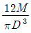
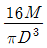
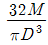
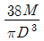
(정답률: 알수없음)

2. 단순보에 등분포하중과 집중하중이 작용할 경우 최대 모멘트 값은?
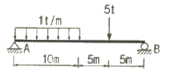
- 41.6 t·m
- 40.2 t·m
- 38.3 t·m
- 37.5 t·m
(정답률: 알수없음)
3. 다음 단순보에서 지점의 반력을 계산한 값으로 옳은 것은?
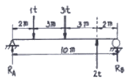
- RA = 1 t, RB = 1 t
- RA = 1.9 t, RB = 0.1 t
- RA = 1.4 t, RB = 0.6 t
- RA = 0.1 t, RB = 1.9 t
(정답률: 알수없음)
4. 다음 그림과 같은 구조물의 0점에 모멘트 하중 8t·m가 작용할 때 모멘트 Mco의 값을 구한 것은?
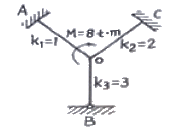
- 4.0 t·m
- 3.5 t·m
- 2.5 t·m
- 1.5 t·m
(정답률: 20%)
5. 다음 중 부정정구조물의 해석방법이 아닌 것은?
- 처짐각법
- 단위하중법
- 최소일의 정리
- 모멘트 분해법
(정답률: 알수없음)
6. 연행 하중이 절대 최대 휨 모멘트가 생기는 위치에 왔을 때, 지점A에서 하중 1t까지의 거리(x)는?
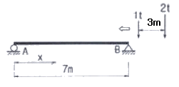
- 0.2 m
- 0.4 m
- 0.8 m
- 1.0 m
(정답률: 37%)
7. 재료의 역학적성질 중 탄성계수를 E, 전단탄성계수를 G, 포아송수를 m이라할 때 각 성질의 상호관계식으로 옳은 것은?
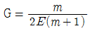
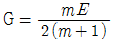
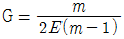
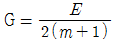
(정답률: 80%)
8. 속이 빈 정사각형 단면에 전단력 6t이 작용하고 있다. 단면에 발생하는 최대전단응력은?
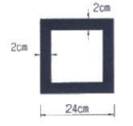
- 54.8 kg/cm2
- 76.3 kg/cm2
- 98.6 kg/cm2
- 126.2 kg/cm2
(정답률: 알수없음)
9. 그림과 같은 켄틸레버보에서 휨모멘트(B.M.D)로서 옳은 것은?
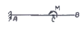
(정답률: 알수없음)
10. 강봉에 400kg의 축하중이 작용하여 축방으로 4mm가 변형되었다면 탄성변형에너지는?
- 60kg·cm
- 80kg·cm
- 100kg·cm
- 120kg·cm
(정답률: 22%)
11. 그림과 같은 구조물에서 BC 부재가 받는 힘은 얼마인가?
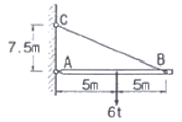
- 1.8t
- 2.4t
- 3.75t
- 5.0t
(정답률: 30%)
12. 그림과 같은 빗금 부분의 단면적 A인 단면에서 도심 y를 구한 값은?
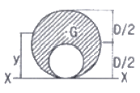
- 5D / 12
- 6D / 12
- 7D / 12
- 8D / 12
(정답률: 46%)
13. 길이 3m인 기둥의 단면이 직경 D=30cm인 원형단면일 경우 단면의 도심축에 대한 세장비는?
- 25
- 30
- 40
- 50
(정답률: 62%)
14. 그림과 같은 트러스에서 부재 V(중앙의 연직재)의 부재력은 얼마인가?
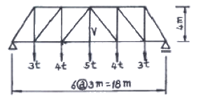
- 5 ton(압축)
- 5 ton(인장)
- 4 ton(압축)
- 4 ton(인장)
(정답률: 70%)
15. 그림과 같은 원형단주가 기둥의 중심으로부터 10cm 편심하여 32t의 집중하중이 작용하고 있다. A점의 응력을 σA=0으로 하려면 기둥의 지름 d의 크기는?
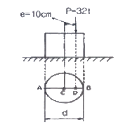
- 40cm
- 80cm
- 120cm
- 160cm
(정답률: 37%)
16. 단면 폭20cm, 높이30cm이고, 길이 6m의 나무로된 단순보의 중앙에 2t의 집중하중이 작용할 때 최대처짐은? (단, E=1.0×105kg/cm2 이다.)
- 0.5cm
- 1.0cm
- 2.0cm
- 3.0cm
(정답률: 알수없음)
17. 트러스를 해석하기 위한 기본가정 중 옳지 않은 것은?
- 부재들은 마찰이 없는 힌지로 연결되어 있다.
- 부재 양단의 힌지 중심을 연결한 직선은 부재축과 일치한다
- 모든 외력은 절점에 집중하중으로 작용한다.
- 하중 작용으로 인한 트러스 각 부재의 변형을 고려한다.
(정답률: 알수없음)
18. 다음 캔틸레버보에서 B점의 처짐은? (단, EI는 일정하다.)
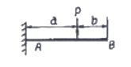
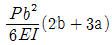
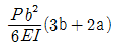
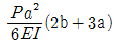
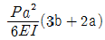
(정답률: 알수없음)
19. 다음 봉재의 단면적이 A이고 탄성계수가 E일 때 C점의 수직 처점은?
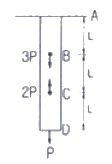
- 4PL / EA
- 3PL / EA
- 2PL / EA
- PL / EA
(정답률: 20%)
20. 다음 그림과 같은 보에서 A지점의 반력은?
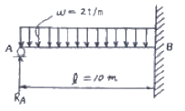
- 6.0 t
- 7.5 t
- 8.0 t
- 9.5 t
(정답률: 알수없음)
2과목: 측량학
21. 최소 제곱법의 원리를 이용하여 처리할 수 있는 오차는?
- 정오차
- 부정오차
- 착오
- 물리적 오차
(정답률: 37%)
22. 다음 조건에 따른 점 C의 높이 최확값은?
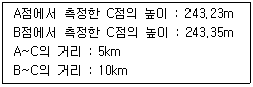
- 243.27m
- 243.29m
- 243.31m
- 243.35m
(정답률: 46%)
23. 폐합트래버스에서 위거오차가 –0.35m이고, 경거오차가 +0.45m이며, 전 측선의 거리의 합이 456m일 때 폐합비는 얼마인가?
- 1/204
- 1/456
- 1/800
- 1/1600
(정답률: 75%)
24. 레벨과 평판을 병용하여 직접 등고선을 측정하려고 한다. 표고 100.25m 인 기준점에 표척을 세워 레벨로 측정한 값이 2.45m 였다. 1m 간격의 등고선을 측정할 때 101m의 등고선을 측정하려면 레벨로 시준하여야 할 표척의 시준높이는?
- 0.50m
- 1.⑤m
- 1.70m
- 2.45m
(정답률: 34%)
25. 정방형 모양의 면적을 동일 정밀도로 거리관측을 하여 1000m2의 면적을 얻었다. 이 때 거리 정확도를 1/10000까지 얻으면 면적오차는?
- 0.1m2
- 0.2m2
- 1.0m2
- 2.0m2
(정답률: 0%)
26. 항공사진 측량시 한 쌍의 항공사진을 입체시 시켜 지형의 표고 차이를 시각적으로 판독할 수 있도록 하는데 이러한 입체사진의 조건으로 옳은 것은?
- 2장의 사진 축척 달라야 한다
- 한 쌍의 사진을 촬영한 카메라의 광축은 거의 동일 평면 내에 있어야 한다.
- 기선고도비가 0.45 정도의 값을 가지고 있어야 한다.
- 입체 사진의 촬영 각도는 클수록 좋다.
(정답률: 알수없음)
27. 레벨의 구조상의 조정 조건으로 가장 중요한 것은?
- 연직축과 기포관축이 평행되어 있을 것
- 기포관축과 망원경의 시준성이 평행되어 있을 것
- 표척을 시준할 때 기포의 위치를 볼 수 있게끔 되어 있을 것
- 망원경의 배율과 기포관의 강도가 균형되어 있을 것
(정답률: 64%)
28. 수애선을 나타내는 수위로서 어느 기간 동안의 수위 중 이것보다 높은 수위와 낮은 수위의 관축위의 관측수가 같은 수위는?
- 평수위
- 평균수위
- 지정수위
- 평균최고수위
(정답률: 알수없음)
29. 종단면도를 이용하여 유토곡선(mass curve)을 작성하는 목적과 가장 거리가 먼 것은?
- 토량의 배분
- 토량의 운반거리 산출
- 토공기계의 결정
- 교통로 확보
(정답률: 알수없음)
30. 다음의 완화곡선에 대한 설명 중 옳지 않은 것은?
- 완화곡선의 접선은 시점에서 원호에, 종점에서 직선에 접한다.
- 곡선의 반지름은 완화곡선의 시점에서 무한대, 종점에서 원곡선의 반지름으로 된다.
- 종점의 캔트는 원곡선의 캔트와 같다.
- 완화곡선에 연한 곡선반경의 감소율은 캔트의 증가율과 같다.
(정답률: 73%)
31. A점의 좌표가 XA=520426.865m, YA=231494.018m, AB의 길이 60m, AB의 방위각 86° 4' 22” 일 때 B점의 좌표는?
- XB=520430.974m, YB=231553.877m
- XB=520430.974m, YB=231498.127m
- XB=520486.724m, YB=231553.877m
- XB=520486.724m, YB=231498.127m
(정답률: 37%)
32. 총 측점수가 18개인 폐합트래버스의 외각을 측정한 경우 총합은?
- 2700°
- 2880°
- 3420°
- 3600°
(정답률: 29%)
33. OA선을 기준으로 O점에서 67° 15' 각도로 100m 거리에 있는 B점을 측설하였다. 이것을 배각법으로 검사하여 최확값 67° 14'를 얻었다면 B점에서의 위치오차는?
- 29.1mm
- 21.8mm
- 19.4mm
- 14.5mm
(정답률: 알수없음)
34. 사진의 크기 18cm×18cm, 초점거리 25cm, 촬영고도 5480m 일 때 이 사진의 포괄면적은?
- 45.6km2
- 35.6km2
- 25.6km2
- 15.6km2
(정답률: 40%)
35. 다음 도로의 횡단면도에서 AB의 수평거리는?
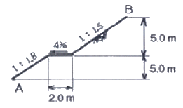
- 8.1m
- 12.3m
- 14.3m
- 18.5m
(정답률: 60%)
36. 우리나라의 노선측량에서 일반철도에 주로 이용되는 완화곡선은?
- 클로소이드 곡선
- 렘니스케이트 곡선
- 2차 포물선
- 3차 포물선
(정답률: 73%)
37. 도근점의 도상 위치오차를 0.2mm까지 허용한다면 평판측량에서 구심오차 20cm를 무시할 수 있는 축척의 한계는?
- 1 : 1000
- 1 : 2000
- 1 : 3000
- 1 : 5000
(정답률: 10%)
38. 다음 중 지구자원탐사위성으로부터 얻어진 영상의 활용분야로 가장 거리가 먼 것은?
- 수자원조사
- 환경오염조사
- 수온의 분포상태
- 두 점간의 정밀한 거리측정
(정답률: 17%)
39. 반지름 400m인 단곡선에서 시단현 15m에 대한 편각은?
- 1° 4' 27”
- 1° 7' 29”
- 1° 13' 33”
- 1° 17' 42”
(정답률: 25%)
40. 축척 1 : 50000 지형도에서 면적을 구한 결과 58cm2이였다. 실면적은?
- 12.0km2
- 14.5km2
- 24.5km2
- 44.0km2
(정답률: 20%)
3과목: 수리학
41. 폭이 6m인 직사각형 단면 수로이 경사가 0.0025이며 11m3/s의 유량이 흐르고 있다. 흐름의 어느 단면에서의 유속이 6m/s였다. 이 단면에서 도수가 발생한다면 공액수심은 얼마인가?
- 0.313m
- 0.871m
- 1.353m
- 2.541m
(정답률: 알수없음)
42. 이중 누가 우량분석법(Double Mass Curve Analysis)에 관한 설명 중 옳은 것은?
- 유역의 평균 우량 산정법이다.
- 우량자료를 확충하기 위한 방법이다.
- 우량자료가 결측되었을 경우 사용한다.
- 강우자료에 일관성을 주기 위한 방법이다.
(정답률: 알수없음)
43. 에너지보정계수(α)에 관한 설명으로 옳은 것은? (여기서, A : 흐름 단면적, dA : 미소유관의 흐름단면적, V : 미소유관의 유속, V : 평균유속)
- α는 속도수두의 단위를 갖는다.
- α는 운동량방정식에서 운동량을 보정해 준다.
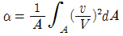
이다.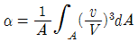
이다.
(정답률: 36%)
44. 다음 중 절대압력(absolute pressure)이란?
- 절대압력이란 주로 공학에 사용되는 압력이다.
- 계기압력에다 대기압을 더한 압력이다.
- 계기압력에다 대기압을 뺀 압력이다.
- 수면에서 0의 값을 갖는 압력이다
(정답률: 34%)
45. 다음 중 하천유량측정 방법이 아닌 것은?
- 위어(Weir)에 의한 측정방법
- 벤추리미터(Ventur imeter)에 의한 측정방법
- 유속계에 의한 측정방법
- 부자에 의한 측정방법
(정답률: 31%)
46. 대규모 수중구조물의 설계홍수량 산정에 가장 적합한 것은?
- 기록상의 최대우량
- 면적평균강우량
- 가능 최대강수량
- 재현기간이 5년에 해당하는 강우량
(정답률: 알수없음)
47. 다음 중 지하수의 지배하는 힘은?
- 관성력
- 점성력
- 중력
- 표면장력
(정답률: 40%)
48. 어떤 유역에 20분간 지속된 강우강도가 31mm/hr 이었다면 강우량은?
- 1.00mm
- 6.67mm
- 10.33mm
- 20.00mm
(정답률: 알수없음)
49. 기온에 관한 다음 설명 중 옳지 않은 것은?
- 년 평균기온은 해당년의 월 평균기온의 평균치로 정의한다.
- 월 평균기온은 해당월의 일 평균기온의 평균치로 정의한다.
- 일 평균기온은 일 최고 및 최저 기온을 평균하여 주로 사용한다.
- 정상 일 평균기온은 30년간의 특정일의 일 평균기온을 평균하여 정의한다.
(정답률: 34%)
50. 높이 4.5m, 폭 2m의 직사각형 판이 수직으로 물을 지지하고 있다. 판의 상단이 수면과 일치할 때 이 판에 작용하는 전수압의 작용점 위치(Hc)는 수면으로부터 몇 m인가?
- 1m
- 1.5m
- 2m
- 3m
(정답률: 37%)
51. 해수에 떠 있는 폭 8m, 길이 20m의 물체를 담수(淡水)에 넣었더니 흘수가 6cm증가했다. 이물체의 무게는? (단, 해수의 단위중량은 1.025t/m3임)
- 309.6 ton
- 393.6 ton
- 398.6 ton
- 399.6 ton
(정답률: 7%)
52. 관수로 내의 마찰손실 이외의 모딘 손실을 무시해도 좋은 경우는?
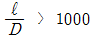
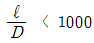
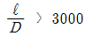
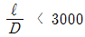
(정답률: 31%)
53. 직4각형 광폭 수로에서 한계류의 특징이 아닌 것은?
- 주어진 유량에 대해 비에너지가 최소이다.
- 주어진 비에너지에 대해 유량이 최대이다.
- 한계수심은 비에너지의 2/3이다.
- 주어진 유량에 대해 비력이 최대이다.
(정답률: 46%)
54. 개수로 내의 정상류의 수심을 y, 수로의 경사를 S, 한계수심과 한계경사를 각각 yc, Sc, 흐름의 Froude수를 Fr이라할 때 y ＞ yc일 때의 조건으로 옳은 것은?
- Fr ＜ 1, S ＜ Sc
- Fr ＞ 1, S ＞ Sc
- Fr ＞ 1, S ＜ Sc
- Fr ＜ 1, S ＞ Sc
(정답률: 알수없음)
55. 다음 중 다르시(Darcy)법칙에 관한 식으로 옳은 것은? (여기서, v : 평균유속, h : 수두, dh : 수두차, ds : 흐름의 길이, k : 투수계수)
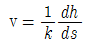
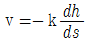
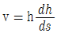
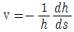
(정답률: 42%)
56. 5m의 높이에 있는 물의 수압은 8kg/cm2 이고, 유속 10m/sec일 때 이 유수의 전수두는 약 얼마인가?
- 80m
- 90m
- 100m
- 110m
(정답률: 28%)
57. 물체의 무게가 800kg, 부피가 0.3m3인 경우 물(담수) 속에 넣었을 때 물 속에서의 무게는?
- 500kg
- 350kg
- 250kg
- 150kg
(정답률: 37%)
58. 다음 중 수리상 유리한 단면조건은?
- 경심(R)이 최소이어야 한다.
- 윤변(P)이 최대가 되어야 한다.
- 경심(R)과 윤변(P)의 곱이 최대가 되어야 한다.
- 경심(R)이 최대가 되든지 윤변(P)이 최소가 되어야 한다.
(정답률: 알수없음)
59. 그림과 같은 수중 오리피스에서 오리피스 단면적이 30cm2 일 때 유출량 Q는? (단, 유량계수 C = 0.6)
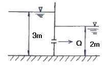
- 약 13.7 ℓ/sec
- 약 12.5 ℓ/sec
- 약 10.2 ℓ/sec
- 약 8.0 ℓ/sec
(정답률: 알수없음)
60. 삼각형 위어(Weir)에서 유량에 비례하는 것은? (단, H는 위어의 월류수심이다.)
- H5/2
- H2
- H3/2
- H1/2
(정답률: 알수없음)
4과목: 철근콘크리트 및 강구조
61. 단면의 복부에 각각 한 개씩 D29철근(1개의 단면적은 642mm2)으로 보강되었다. 단면의 공칭휨강도 Mn은 얼마인가? (단, fck = 25MPa, fy = 400MPa이다.)
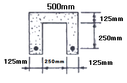
- 180.2kN·m
- 162.3kN·m
- 130.7kN·m
- 109.8kN·m
(정답률: 알수없음)
62. 슬래브 단변 S=3m, 장변 L=4.5m에 집중하중 P=150kN이 슬래브의 중앙에 작용한 경우 단변 S가 부담하는 하중은 얼마인가?
- 116kN
- 83kN
- 77kN
- 73kN
(정답률: 알수없음)
63. 부재축에 직각으로 배치하는 전단철근의 전단강도 Vs를 구하는 식으로 옳은 것은? (단, Av : 전단철근단면적, s : 전단철근간격, d : 부재의 유효깊이, fyt : 전단철근의 항복강도, ø : 강도감소계수)
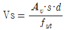
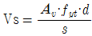
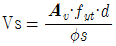
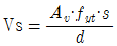
(정답률: 알수없음)
64. 콘크리트의 전단면이 균등하게 fck의 응력을 받고 철근도 균등하게 항복점 응력 fy를 받는다고 가정했을 때의 전단응력의 합력의 작용점을 무엇이라고 하는가?
- 전단중심
- 소성중심
- 도심
- 중립축
(정답률: 20%)
65. 길이 10m의 PS강선을 인장대에서 긴장 정착할 때 인장력의 감소량은 얼마인가? (단, 프리텐션 방식을 사용하며 긴장장치에서의 활동량은 △ℓ=3mm이고, Ap=5mm2, Ep=2.0×105MPa이다)
- 200N
- 300N
- 400N
- 500N
(정답률: 46%)
66. 포스트텐션방법에서 그라우트를 행하는 가장 중요한 이유는?
- 긴장재의 부식 방지
- 강재의 정착과 부착
- 긴장력의 증진
- 부착력의 확보
(정답률: 알수없음)
67. 그림과 같은 띠철근 기둥의 공칭축강도(Pn)는 얼마인가? (단, fck=24MPa, fy=300MPa, 종방향 철근의 전체 단면적 Ast=2027mm2이다.)
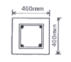
- 2145.7kN
- 2279.2kN
- 3064.6kN
- 3492.2kN
(정답률: 40%)
68. fck=21MPa, fy=350MPa로 만들어지는 보에서 인장이형 철근으로 D29(공칭지름 28.6mm)를 사용한다면 기본정착길이는?
- 892mm
- 1⑤4mm
- 1167mm
- 1311mm
(정답률: 77%)
69. 2.85m×2.85m(d=510mm)인 독립 확대기초가 중앙에 0.46m×0.46m의 직사각형 기둥을 지지하고 있고 기둥에 작용하는 하중이 Pu=2490kN이고 두방향 전단거동을 할 경우 위험단면에서 계수 전단력 Vu를 구하면?
- 1202.4kN
- 2003.8kN
- 2201.6kN
- 31⑤.1kN
(정답률: 10%)
70. 단철근 직사각형보에서 단면의 폭(b)이 600mm, 유효깊이 (d)는 1000mm, 철근 공칭지름이 16mm인 철근을 10개 사용할 때 철근비 ρ는?
- 0.0034
- 0.0045
- 0.0⑤4
- 0.0345
(정답률: 알수없음)
71. 경간10m인 대칭 T형보에서 양쪽 슬래브의 중심간 거리가 2100mm, 플랜지 두께는 100mm, 복부의 폭(bw)은 400mm일 때 플랜지의 유효폭은?
- 2500mm
- 2250mm
- 2100mm
- 2000mm
(정답률: 알수없음)
72. 어떤 강교의 지간이 12m일 때 충격 계수는?
- 0.25
- 0.27
- 0.29
- 0.31
(정답률: 22%)
73. 피로에 대한 콘크리트구조설계기준 규정으로 틀린 설명은?
- 보의 피로는 휨 및 전단에 대하여 검토하여야 한다.
- 일반적인 기둥의 경우 피로를 검토하지 않아도 좋다.
- 슬래브의 피로는 휨 및 전단에 대하여 검토하여야 한다.
- 피로의 검토가 필요한 구조부재는 높은 응력을 받는 부분에서는 반드시 철근을 구부려서 시공하여야 한다.
(정답률: 알수없음)
74. 폭이 400mm, 유효깊이가 600mm인 직사각형보에서 콘크리트가 부담할 수 있는 전단강도 Vc는 얼마인가? (단, fck는 24MPa임)
- 196kN
- 248kN
- 326kN
- 392kN
(정답률: 46%)
75. 철근콘크리트 구조물에서 비틀림철근으로 사용할 수 없는 것은?
- 부재축에 수직인 폐쇄스터럽
- 부재축에 수직인 횡방향 강선으로 구성된 폐쇄용 접철망
- 철근콘크리트 보에서 나선철근
- 주인장철근에 30도 이상의 각도로 구부린 굽힘철근
(정답률: 59%)
76. 깊은 보에 대한 설명으로 옳은 것은?
- 순경간(ln)이 부재 깊이의 3배 이하이거나 하중이 받침으로부터 부재 깊이의 0.5배 거리 이내에 작용하는 보
- 순경간(ln)이 부재 깊이의 4배 이하이거나 하중이 받침으로부터 부재 깊이의 2배 거리 이내에 작용하는 보
- 순경간(ln)이 부재 깊이의 5배 이하이거나 하중이 받침으로부터 부재 깊이의 4배 거리 이내에 작용하는 보
- 순경간(ln)이 부재 깊이의 6배 이하이거나 하중이 받침으로부터 부재 깊이의 5배 거리 이내에 작용하는 보
(정답률: 70%)
77. 나선철근과 띠철근 기둥에서 축방향 철근의 순간격에 대한 설명으로 옳은 것은?
- 25mm이상, 또한 철근 공칭지름의 0.5배 이상으로 하여야 한다.
- 25mm이상, 또한 철근 공칭지름의 1배 이상으로 하여야 한다.
- 25mm이상, 또한 철근 공칭지름의 1.5배 이상으로 하여야 한다.
- 25mm이상, 또한 철근 공칭지름의 2.5배 이상으로 하여야 한다.
(정답률: 알수없음)
78. 그림과 같은 연결에서 리벳의 강도는? (단, 허용전단응력은 130MPa, 허용지압응력은 300MPa)
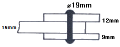
- 73.7kN
- 85.5kN
- 89.4kN
- 92.8kN
(정답률: 20%)
79. 그림과 같은 복철근 직사각형보의 변형률도에서 압축철근의 응력은? (단, fck=28MPa, fy=300MPa, Es=200000MPa)
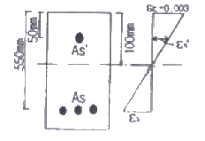
- 280MPa
- 300MPa
- 350MPa
- 400MPa
(정답률: 알수없음)
80. 정착구와 커플러의 위치에서 프리스트레싱 도입 직후 포스트텐션 긴장재의 응력은 최대 얼마 이하로 하여야 하는가? (단, fpu :긴장재의 설계기준 항복강도)
- 0.4fpu
- 0.5fpu
- 0.6fpu
- 0.7fpu
(정답률: 알수없음)
5과목: 토질 및 기초
81. 점토의 예민비를 알기위해 행하는 시험은?
- 직접전단시험
- 삼축압축시험
- 일축압축시험
- 표준관입시험
(정답률: 59%)
82. 5m×10m 의 장방형 기초에 q=6t/m2의 등분포하중이 작용할 때 지표면 아래 5m에서의 증가유효 수직 응력을 2:1 분포법으로 구한 값은?
- 1t/m2
- 2t/m2
- 3t/m2
- 4t/m2
(정답률: 50%)
83. 두께 6m의 점토층이 있다. 이 점토의 간극비는 eo = 2.0이고 액성한계는 WL = 70%이다. 압밀하중을 2kg/cm2에서 4kg/cm2로 증가시키려고 한다. 예상되는 압밀침하량은? (단, 압축지수 Cc는 skempton의 식 Cc = 0.009(WL - 10)을 이용할 것)
- 0.27m
- 0.33m
- 0.49m
- 0.65m
(정답률: 58%)
84. 점토지반을 프리-로딩(pre-loading)공법 등으로 미리 압밀시킨 후에 급격히 재하할 때의 안정을 검토하는 경우에 가장 적당한 전단시험 방법은?
- 비압밀 비배수(UU)시험
- 압밀 비배수(CU)시험
- 압밀 배수(CD)시험
- 압밀 완속(CS)시험
(정답률: 34%)
85. 다음 중에서 사운딩(sounding)이 아닌 것은 어느 것인가?
- 표준관입시험(standard penetration test)
- 일축압축시험(unconfined compression test)
- 원추관입시험(cone penetrometer test)
- 베인시험(vane test)
(정답률: 55%)
86. 다음 중 압밀침하량 산정시 관련이 없는 것은?
- 체적변화계수
- 압축지수
- 압축계수
- 알밀계수
(정답률: 28%)
87. 1m3의 포화점토를 채취하여 습윤단위무게와 함수비를 측정한 결과 각각 1.68t/m3와 60%였다. 이 포화점토의 비중은 얼마인가?
- 2,14
- 2.84
- 1.58
- 1.31
(정답률: 알수없음)
88. 단위 체적중량 1.8t/m3, 점착력 2.0t/m3, 내부마찰각 0° 인 점토지반에 폭 2m, 근입깊이 3m의 연속기초를 설치하였다. 이 기초의 극한 지지력을 Terzaghi 식으로 구한 값은? (단, 지지력 계수 Nc=5.7, Nr=0, Nq= 1.0)
- 8.4t/m2
- 23.2t/m2
- 12.7t/m2
- 16.8t/m2
(정답률: 39%)
89. 흙의 다짐시험에서 다짐에너지를 증가시킬 때 일어나는 결과는?
- 최적함수비와 최대건조밀도가 모드 증가한다.
- 최적함수비와 최대건조밀도가 모두 감소한다
- 최적함수비는 증가하고 최대건조밀도는 감소한다.
- 최적함수비는 감소하고 최대건조밀도는 증가한다.
(정답률: 알수없음)
90. AASHTO 분류 및 통일분류법은 No.200(0.075mm)체 통과율을 기준으로 하여 흙을 조립토와 세립토로 구분한다. AASHTO방법에서는 No.200체 통과량이 ( ① )이상인 흙을 세립토로 통일 분류법에서는 ( ② )이상을 세립토로 한다. ( )에 맞는 수치는?
- ① 50%, ② 35%
- ① 40%, ② 40%
- ① 35%, ② 50%
- ① 45%, ② 45%
(정답률: 알수없음)
91. 분사현상(quick sand action)에 관한 그림이 아래와 같을 때 수두차 h를 최호 얼마 이상으로 하면 모래시표에 분사현상이 발생하겠는가? (단, 모래의 비중 2.6, 공극률 50%)
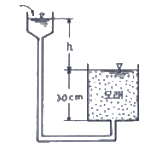
- 6cm
- 12cm
- 24cm
- 30cm
(정답률: 50%)
92. 현장에서 직접 연약한 점토의 전단강도를 측정하는 방법으로 흙이 전단될 때의 회전저항 모멘트를 측정하여 점토의 점착력(비배수 강도)을 측정하는 시험방법은?
- 표준관입시험
- 더치콘
- 베인시험
- CBR Test
(정답률: 47%)
93. 점착력이 0.4kf/cm2, 내부마찰각이 35°, 습윤단위 무게가 2.1t/m3이다. 이 지반을 연직으로 7m 굴착하였을 때 연직사면의 안전율은?
- 1.5
- 2.1
- 2.5
- 3.0
(정답률: 알수없음)
94. 다음 중 동상의 방지 대책으로 옳지 않은 것은?
- 모관수의 상승을 차단한다.
- 도로포장의 경우 보조기층아래 동결작용에 민감하지 않은 모래 또는 자갈층을 둔다.
- 동결심도 대상 깊이의 재료를 모관 상승고가 큰 재료로 치환한다.
- 구조물기초는 동결피해가 없도록 동결깊이 아래에 설치한다.
(정답률: 80%)
95. 말뚝의 허용지지력을 구하는 Sander 의 공식은? (단, Ra : 허용지지력, S : 관입량, WH : 해머의 중량, H : 낙하고)
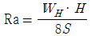
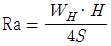
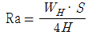
(정답률: 알수없음)
96. 다음 그림은 불교란 채취하기 위한 샘플러 선단의 그림이다. 면적비(Area ratio, Ar)를 구하는 식으로 옳은 것은?
(정답률: 64%)
97. 그림과 같은 지표면에 10t 의 집중하중이 작용했을 때 작용점의 직하 3m 지점에서 이 하중에 의한 연직응력은?
- 0.422t/m2
- 0.531t/m2
- 0.641t/m2
- 0.708t/m2
(정답률: 알수없음)
98. 정수위 투수 시험에 있어서 투수계수(k)에 관한 설명 중 옳지 못한 것은?
- k는 유출 수량에 비례
- k는 시료 길이에 반비례
- k는 수두에 반비레
- k는 유출 소요시간에 반비례
(정답률: 알수없음)
99. 랭킨 토압론의 가정 중 맞지 않는 것은?
- 흙은 비압축성이고 균질하다
- 지표면은 무한히 넓다.
- 흙은 입자간의 마찰에 의하여 평행조건을 유지한다.
- 토압은 지표면에 수직으로 작용한다.
(정답률: 28%)
100. Boiling 현상은 주로 어떤 지반에 많이 생기는가?
- 모래지반
- 사질점토지반
- 보통토
- 점토질지반
(정답률: 17%)
6과목: 상하수도공학
101. 수원의 구비조건으로 옳지 않은 것은?
- 최대갈수기에도 계획수량의 확보가 가능해야 한다.
- 수질이 양호해야 한다.
- 오염 회피를 위하여 도심에서 멀리 떨어진 곳일수록 좋다.
- 수리권의 획득이 용이하고, 건설비 및 유지관리가 경제적이어야 한다.
(정답률: 64%)
102. 펌프의 회전수 N = 2800rpm, 양수량 Q = 2.1m3/min, 전양정 H = 170m인 원심펌프의 비교회전도(Ns)는?
- 54
- 86
- 103
- 206
(정답률: 알수없음)
103. 소독을 위해 염소를 주입하였을 때 염쇼가 물에 용해되어 물과 반응하여 생성되는 유리 잔류 염소란 무엇인가?
- 클로라민
- Cl2
- Cl-
- HOCl, OCl-
(정답률: 알수없음)
104. 소규모 하수도는 하나의 하수도 계획구역에서 계획인구가 약 몇 명 이하인 하수도를 말하는가?
- 10000명
- 50000명
- 100000명
- 200000명
(정답률: 39%)
1⑤. 다음 중 하수의 살균시 사용하지 않는 물질은?
- 염소
- 오존
- 적외선
- 자외선
(정답률: 알수없음)
106. 다음 관거별 계획하수량을 결정할 때 고려하여야 할 사랑으로 틀린 것은?
- 오수관거는 계획시간최대오수량으로 한다.
- 우수관거는 계획우수량으로 한다.
- 합류식 관거는 계획1일최대오수량에 계획우수량을 합한 것으로 한다.
- 차집관거는 우천시 계획오수량으로 한다.
(정답률: 알수없음)
107. 다음 중 염소소독시 살균능력이 가장 강한 것은?
- HOCl
- OCl-
- NH2Cl
- NHCl2
(정답률: 50%)
108. 흡입구경 600mm인 펌프가 2m/sec의 유속으로 물을 흐입한여 전양경 5m 높이인 곳으로 토출한다. 펌프의 효율을 80% 전동기의 여유율을 10%라 하면 소요동력은?
- 41.6kw
- 48.5kw
- 38.1kw
- 34.6kw
(정답률: 알수없음)
109. ( )에 알맞은 것으로 짝지어진 것은?
- 크고, 1m
- 작고, 0.5m
- 크고, 0.5m
- 작고, 1m
(정답률: 25%)
110. 우리나라의 상수도 시설을 설계, 계획할 때 계획(목표)년도는 통상 몇 년을 표준으로 하는가?
- 2~3년
- 15~20년
- 30~40년
- 50년 이상
(정답률: 55%)
111. 갈수시에도 일정 이상의 수심을 확보할 수 있다면, 연간의 수위변화가 크더라도 하천이나 호소, 댐에서의 취수시설로서 알맞고 또한 유지관리도 비교적 용이한 취수방법은?
- 취수관거에 의한 방법
- 취수탑에 의한 방법
- 집수매거에 의한 방법
- 깊은 우물에 의한 방법
(정답률: 알수없음)
112. 하수배제방식 중 분류식과 합류식에 관한 설명으로 틀린 것은?
- 분류식은 관거오접에 대한 철저한 감시가 필요하다.
- 우천시 합류식이 분류식보다 처리장으로의 토사유입이 적다.
- 합류식이 분류식에 비해 시공이 용이하다.
- 분류식은 우천시 오수를 수역으로 방류하는 일이 없으므로 수질오염방지상 유리하다.
(정답률: 55%)
113. 하천에 오수가 유입될 때 하천의 자정작용 중 최초의 분해 지대에서 BOD가 감소하는 주원인은?
- 유기물의 침전
- 미생물의 번식
- 온도의 변화
- 탁도의 증가
(정답률: 알수없음)
114. 다음 중 계획취수량을 결정할 때의 표준으로 옳은 것은?
- 계획1일평균급수량에 10% 정도의 여유 고려
- 계획1일최대급수량에 10% 정도의 여유 고려
- 계획1일평균급수랴에 30% 정도의 여유 고려
- 계획1일최대급수량에 30% 정도의 여유 고려
(정답률: 85%)
115. 1일에 500m3의 폐수를 24시간 동안 평균적으로 배출하는 공장이 있다. 이 폐수 중 부유물질의 침각속도가 20m/day 라면 이 부유물질을 제거하기 위한 이상적인 조건 아래의 참전지의 표면적은 얼마나 적당한가?
- 25m2
- 50m2
- 100m2
- 150m2
(정답률: 알수없음)
116. 역사이펀에 대한 설명 중 틀린 것은?
- 역사이펀 관거내의 유속은 상류측 관거내의 유속을 20~30% 증가시킨 것으로 한다.
- 역사이펀 관거의 설치위치는 교대, 교각 등의 바로 및은 피한다.
- 역사이펀실에서는 수문설비 및 깊이 0.5m 정도의 이토실을 설치한다
- 역사이펀은 공사비를 고려하여 일반적으로 복수관거로 하지 않는다.
(정답률: 70%)
117. 수격현상의 발생을 경감시킬 수 있는 방안이 아닌 것은?
- 펌프의 속도가 급격히 변화하는 것을 방지한다.
- 관내의 유속을 크게 한다.
- 안전벨브를 설치한다.
- 압력조정 수조를 설치한다.
(정답률: 알수없음)
118. 함수율 99%인 슬러지를 농축하여 함수율 97%로 하였을 때 슬러지의 부피는?
- 1/3로 감소
- 3배 증가
- 2%감소
- 2%증가
(정답률: 알수없음)
119. 슬러지 용적지수(SVI)에 대한 설명으로 옳은 것은?
- 침전슬러지량 1000ml 중에 포함되는 MLSS를 프램수로 나타낸것이다.
- 슬러지의 벌킹 여부를 확인하는 지표로 사용한다.
- 수치가 클수록 침전성이 양호한 것이다.
- SVI가 200 이상일 때 침전성은 양호하다.
(정답률: 50%)
120. 다음 중 읍집처리를 위한 응집제가 아닌 것은?
- 황산알루미늄(Al2(SO4)3)
- 염화제2철(FeCl3)
- 황산제2철(Fe2(SO4)3)
- 황화수소(H2S)
(정답률: 알수없음)
최대 휨응력 = (32 * M) / (π * D^3)
위 식에서 M은 휨모멘트, D는 보의 지름을 나타낸다. 이 식에서 분모인 D^3이 가장 큰 값을 가지므로, 지름 D가 작을수록 최대 휨응력은 커진다. 따라서 보기 중에서 지름 D가 가장 작은 ""이 정답이 된다.